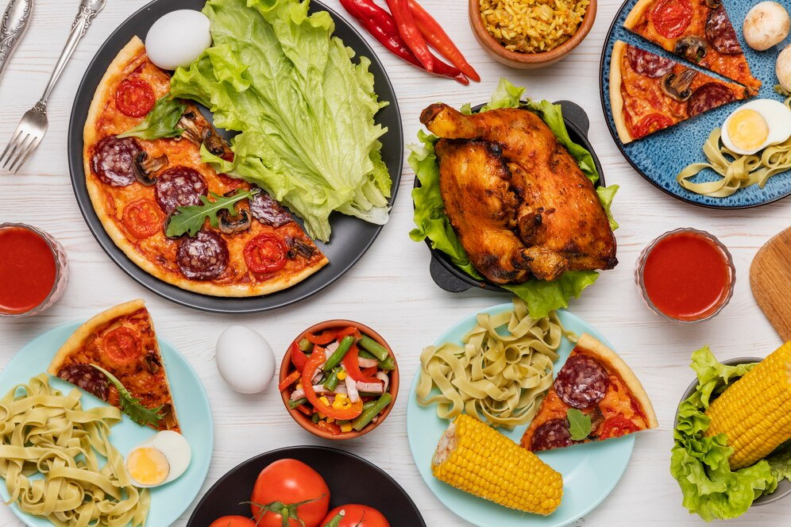

Tech
"How Emerging Technologies are Revolutionizing Business with Personalization, Automation, and Sustainability"
12 Feb 2024
Emerging technologies like AI, IoT, blockchain, and AR/VR are transforming business with personalized experiences, real-time insights, and enhanced automation. Innovations in 5G, quantum computing, and green tech drive sustainability, security, and efficiency, while low-code platforms and RPA streamline development and routine tasks, empowering creative work.
MRYAN

Food
"The Power of Healthy Eating: Boosting Energy, Immunity, and Sustainability"
12 Feb 2024
Healthy food includes nutrient-dense fruits, vegetables, whole grains, lean proteins, and healthy fats that boost energy, immunity, and overall well-being. Reducing processed foods and opting for sustainable, organic choices further supports health and the environment.
MRYAN

Tech
"Revolutionizing Digital Media and Empowering Creators"
02 March 2022
YouTube has transformed digital media, enabling global video sharing and content discovery, while offering creators and brands opportunities for engagement and monetization through ads and memberships.
MRYAN

Tech
"Transforming Industries: Key Tech Trends Shaping the Future"
23 March 2024
Key tech trends like AI, 5G, blockchain, AR/VR, and sustainable tech are transforming industries, enhancing automation, connectivity, security, and efficiency across sectors like healthcare, finance, and manufacturing.
MRYAN

Tech
"The Evolution of TVs and Laptops: Smart, Sustainable, and High-Performance"
28 March 2024
Modern TVs and laptops are now eco-friendly, high-performance devices; TVs function as smart home hubs, while laptops offer flexibility and portability, aligning with trends in connectivity and sustainability.
MRYAN
News
"News Trends: Political Shifts, Economic Growth, Tech Advancements, and Sustainability Initiatives"
07 April 2024
News trends highlight developments in politics, economics, technology, and social policy. The upcoming elections emphasize economic growth and public welfare, while steady economic growth is supported by manufacturing and agriculture. Technological advancements in AI, 5G, and renewable energy are accelerating, with increased focus on domestic tech manufacturing. Social reforms and environmental initiatives, such as digital health and renewable energy adoption, align with sustainability goals, impacting the country’s long-term ambitions on the global stage.
MRYAN

Food
"A Culinary Journey: Exploring Global Dishes and Their Cultural Roots"
15 April 2024
Global cuisine highlights diverse flavors with each country offering unique dishes: Italy is known for pizza and pasta, India for biryani and samosas, Japan for sushi and ramen, and Mexico for tacos and guacamole. France, China, Thailand, Greece, Brazil, and the US each contribute iconic foods reflecting their rich culinary traditions.
MRYAN

News
"Volatility and Opportunity: Recent Trends in the Tech Market"
30 April 2024
Recent tech market trends show volatility, with Microsoft and Meta facing mixed earnings reactions. Generation Z and older investors are increasing tech stock investments, while private market platforms like EquityZen and Forge offer opportunities, though with higher risks due to limited financial transparency.
MRYAN

Food
"Exploring Non-Vegetarian Foods: Rich in Protein and Flavor"
12 May 2024
Food includes meats like poultry, fish, red meat, and seafood, as well as eggs and dairy. It is rich in protein, vitamins, and minerals, and is prepared through various methods such as grilling, frying, and stewing. Popular dishes include chicken curry, grilled fish, and beef steaks.
MRYAN